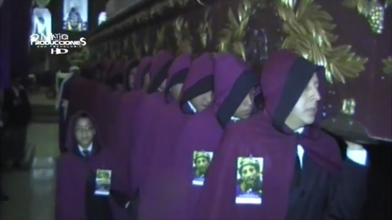
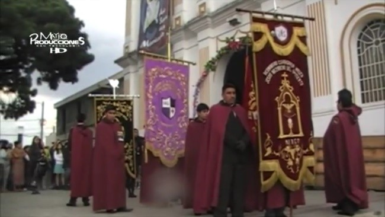

Saliendo en procesión el primer grupo de caballeros un 22 de marzo del mismo año (1998), con su característico atuendo como grupo que consta de traje formal negro y su principal prenda la Capa color Corinto con el escudo que consta del icono infaltable de la hermandad con las letras al rededor del mismo con las palabras “Caballeros de Jesús del Aposento”.
 La congregación de caballeros de Jesús del Aposento como parte de la labor como católicos desarrolla durante todo el año pasaditas donde diferentes Familias devotas reciben en sus hogares a réplicas de Jesús, también entre las actividades previo a semana mayor se pueden mencionar su colaboración con la unción de la venerada imagen del señor sepultado, asistir a velaciones y actividades de otras hermandades, cofradías, retiros espirituales, apoyo al traslado de las andas procesionales del lugar donde preparan el adorno de las mismas, hacia la iglesia.
Una de las más emblemáticas participaciones es el día Jueves Santo Cuando la imagen consagrada de Jesús del Aposento es colocada en el Aposento o Cárcel (de ahí el memorable nombre de nuestra imagen de pasión) la cual se encuentra acompañada y bellamente adornado en un altar con todas las flores que fueron recolectadas un día antes en su cortejo Procesional, junto a la guardia durante todo el día jueves de Caballeros que se van turnando durante todo el día en los flancos del altar.
El grupo está conformado por varones de diferentes edades, sin embargo, lo que más llena de gusto y satisfacción es tener un semillero como fue llamado por miembros del grupo que incluye a niños que a su corta edad serán el futuro grupo que llevara en hombros la venerada imagen de Jesús en su cortejo procesional mayor, niños de diferentes edades, muchos de ellos hijos de compañeros del grupo o también de otras hermandades, grupos o cofradías del pueblo católico en general. Sin duda alguna su alto manifiesto de fe y amor por devoción fue lo que llevo a tener el grupo de Caballeritos que salen en cortejo procesional acompañando no solo miércoles santo sino también el Recorrido de la procesión infantil. Confiamos con este que el grupo siempre tendrá integrantes nuevos en sus filas.
El grupo sobresale por llevar en actividades y cortejos procesionales la ya
característica capa color Corinto con una franja negra en el capuchón, el
bordado del emblema en el lado izquierdo de la misma y junto a la capa medallón
y pin representativo del grupo. Existe
la segunda capa con alusión al luto utilizada mayormente en el cortejo
procesional del Santo entierro, que cambia únicamente en el invertir los
colores en la capa, es decir la totalidad de la capa es negra, pero con la
franja en el capucho de color corinto con su emblema bordado en el hombro
izquierdo de color mayormente en letras color plata con los colores del escudo
de la hermandad.
Diseñado por
Pine Cloud .